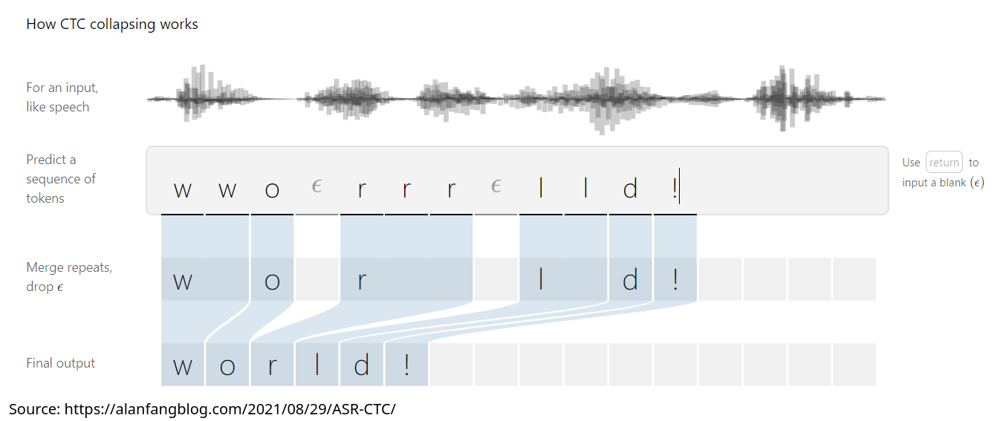
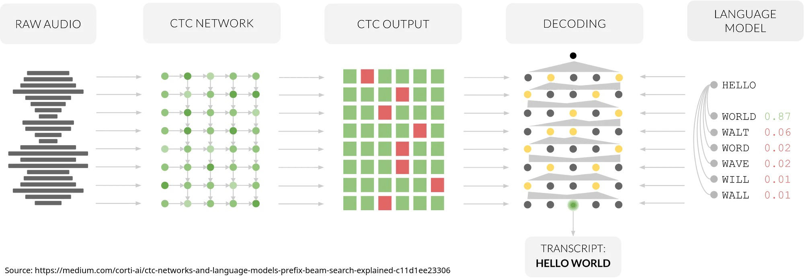
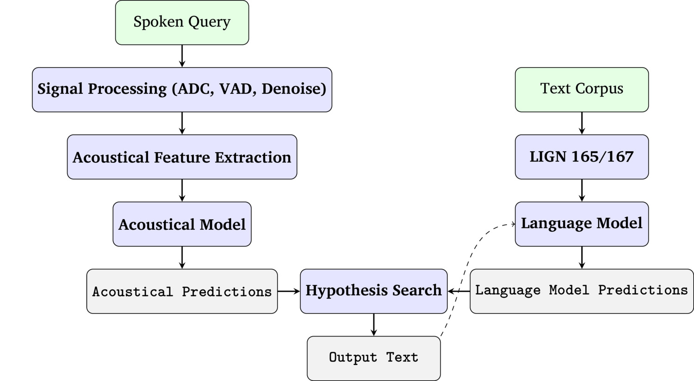
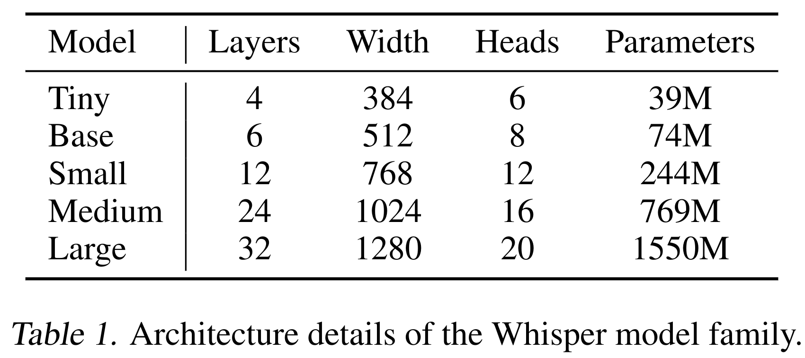

We understand their pros, their cons, and their various types
How can they be applied for ASR?
There are hundreds of ways to do this task
We’re going to talk about a few interesting approaches
Spectral and CNN-based Approaches
The Alignment Problem
Sound-to-Vector Models and Wav2Vec 2
Whisper
Neural ASR is boring
“Let’s give the model a spectrogram directly”
Often something like a logged mel spectrogram
Sometimes something like a mel cepstrogram
Sometimes a png file of a spectrogram itself
Treat it like any other image!
Convolutional Neural Networks excel at finding patterns in images
Spectrogram reading is just finding patterns in images
Neural Network training will ensure you find the right patterns
“Is this system going to do what I want it to do, for the reasons I want it to do it?”
“Are these two things synchronized, ordered, and time-aligned properly?”
“Is this picture a rabbit or a cat?”
“Would this Instagram user buy diet pills, based on their follow list?”
“Is this email likely an attempt to purchase chemical weapons?”
“Detect motion in this noisy video feed from the warehouse”
“Identify all characters in this cursive sentence”
“Take this music and generate a score for it”
ASR!
Not all frames contain a character
Some characters take more than one frame to complete
Some characters are repeated
Any ASR approach needs to address this!
Let’s assume something allows us to assign every frame to a likely category label (e.g. phone)
Create a list of possible output labels (e.g. ‘cat’, ‘penguin’, ‘access’)
“If a frame label repeats across multiple frames, it’s probably the same chunk”
“If an output label has a blank between, it’s probably just one chunk”

Sort of like decoding an HMM using the Viterbi algorithm
“What’s the output label(s) for this sequence that best fit the data?”
Now, you can match a series of frame labels, to the most likely output labels
The probability of the correct choice being made is also a good loss function!



(Source: BogdanShevchenko - Own work, CC BY-SA 4.0, https://commons.wikimedia.org/w/index.php?curid=128835919)
We get predictions from the acoustics by feeding
We match those to word representations using CTC
We can unite this with a language model, evaluating probabilities using beam search
This can turn a sequence of phones into a transcript!
What if we could turn the waveform into a vector directly, and just go end-to-end?
This leads to approaches like…
Developed by Facebook’s AI team
Takes in a waveform directly, and outputs higher quality features for use in ASR
Feature Encoding: Uses CNNs to create ‘latent representations’ every 10ms or so
Context Network: Combines the features to capture adjacency effects
We’re going to take away (‘mask’) some of the representations coming out of the model
Now, we make the algorithm predict what’s missing
The loss function involves correctly choosing the missing representations, among a random set sampled from elsewhere
This allows it to learn without as much labeled data

This is absolutely wild, given how bad our writing system is!
It also doesn’t need CTC, as that’s a part of the transformer’s core competencies
These quantized units raise the possibility of a language-independent ASR system!
You combine the token-representation with a separate language model to find hypotheses
Again, you can use probabilities and/or beam search to find the best approach
Some people are trying to make this fully end to end, building the language model into the Wav2Vec Model
Wav2Vec2 goes from acoustics to quantized tokens
Those tokens can be mapped directly to linguistic units
Linguistic units plus a language model give probabilities for outputs
Output probabilities can be beam-searched, to arrive at the best transcription
We’ve gone from Waves to Words in just two steps!
It’s not often revealed how commercial ASR systems work
We should assume many systems are using a similar architecture under the hood!
… but at least one system is different!
It does transcription
It does some multilingual ASR and translation too!
It also can be used for language identification!
It is shockingly good!



It’s probably the right choice for transcribing files at the moment!
… it’s also the last neural ASR architecture we’re going to look at this quarter!
Many people have lovely careers, and the tools are exhilaratingly powerful
… but…
“Feed in waves and text to a transformer, cook for two weeks, then have a model”
There is no linguistic nuance
There’s not even transcription anymore!
Thus, more memory and energy cost generally wins
This privileges large companies with large resources
This focuses development on wealthy languages and groups
How do we get great ASR working for a language with low amounts of data/money/hardware?
How can we use ASR to more quickly generate, study, and clean language data?
How can we use ASR to enable field work and linguistic inquiry more effectively
How can ASR help people who the tech industry doesn’t care enough to help?
He’s in the trenches with these ideas right now!
… and we’ll hear from him next time!
Feeding spectral information into CNNs is a great way to extract features
You need to solve the alignment problem, either with CTC or Transformers
Wav2Vec2 offers a path straight from audio to intermediate representations
Whisper is free, great, and completely end-to-end!